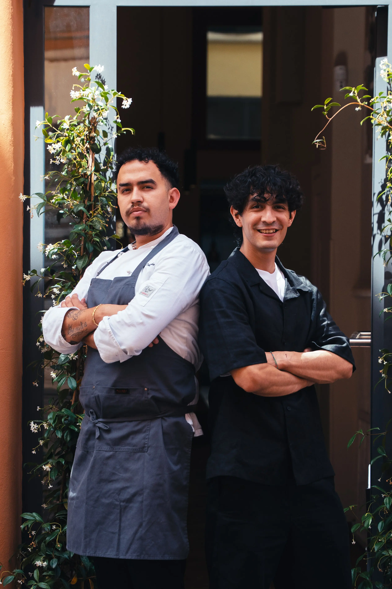
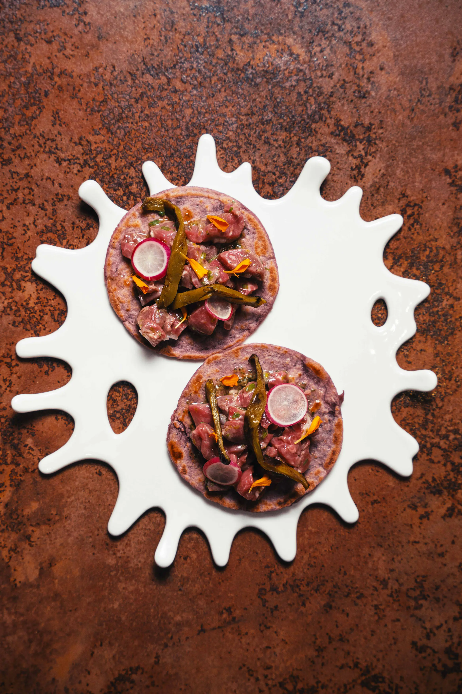
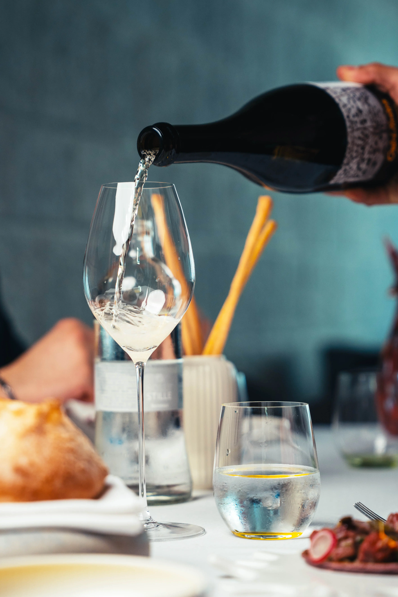

Chi Siamo
Famiglia. È da qui, che tutto ha inizio.
Siamo Axel e Brandom, due cugini uniti dalla stessa passione: l’enogastronomia.
Fin da bambini abbiamo respirato il profumo delle cucine e il ritmo dei ristoranti, cresciuti tra sapori autentici
e curiosità per le nuove frontiere del gusto.
Il nostro percorso ci ha portati a trasformare quella passione in mestiere anche attraverso i corsi ALMA,
la Scuola Internazionale di Cucina Italiana fondata da Gualtiero Marchesi, e i corsi A.I.S, Associazione Italiana Sommelier,
approfondendo così l’arte dell’abbinamento tra vino e pietanze.
Nel nostro ristorante vogliamo fondere tradizione e modernità, memoria e creatività.
Una cucina che parla di noi, delle nostre origini e del desiderio di offrire esperienze sincere, arricchite da conoscenza, ricerca e disponibilità.
Vi accogliamo come accoglieremmo in famiglia: con passione, cura e un tocco personale.



Contattaci
345 586 0735
Via Ragno 15/A Ferrara